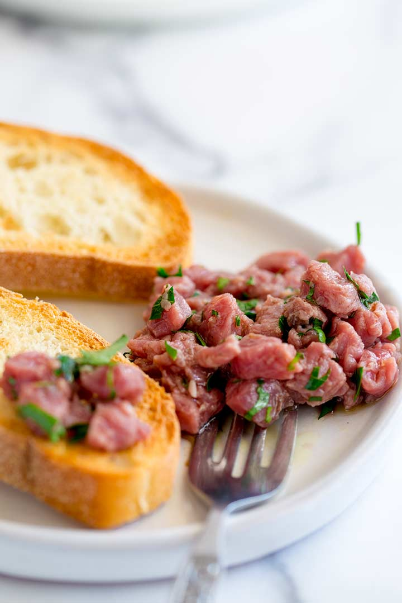

Veal Carne Cruda

Description
Attempted copycat of the Veal Carne Cruda from Flour and Water 7/29/23, mostly adopted from this carne cruda recipe.
Ingredients
- 9oz Veal
- 1/2 lemon
- 1tbsp olive oil
- 2 anchovy filets
- Salt
- Freshly cracked black pepper
- 1tbsp chopped flat leaf parsley
- Calabrian chili oil
- Crispy potato
Steps
- As soon as you get the meat home, remove it from the plastic/paper, trim it of any fat/sinew and then place in the freezer for 30-45 minutes.
- Remove the beef from the freezer and chop into long slices against the grain, cut these strips into long thin strips. Rotate the strips and cut into small cubes. Place the meat in a non-metalic bowl, cover and leave in the coldest part of the fridge until you are ready to serve.
- Squeeze the juice of the lemons into a jug and add in the olive oil.
- Finely chop and squash the anchovy fillet against the chopping board until you have rough anchovy paste.
- Mix this into the lemon oil mixture.
- Season generously with salt and pepper and mix well.
- Just before you serve it, stir the parsley through the beef.